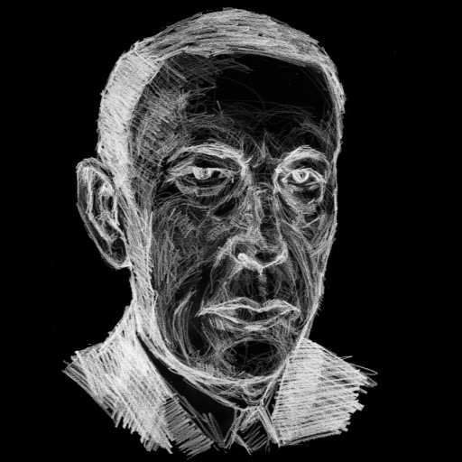

Music
Favourite pieces from my favourite composers, including those I have arranged for solo piano.
Frédéric Chopin
- Waltz Op. 64 No. 2
- Etude Op. 10 No. 3 & 6
- Nocturne Op. 55 No. 1
“Oh, how hard it must be to die anywhere but in one's birthplace.”
Franz Liszt
- S.172 Consolation No. 3
- S.541 Liebestraum
- S.558/12 Ave Maria
“Life is only a long and bitter suicide, and faith alone can transform this suicide into a sacrifice.”
Pyotr Ilyich Tchaikovsky
- The Nutcracker: Dance of the Sugarplum Fairy
- The Seasons Op 37a: June & October
“Inspiration is a guest that does not willingly visit the lazy.”
Sergei Rachmaninoff
- Prelude Op.3 No. 2
- Rhapsody on a Theme of Paganaini Op. 43 var. 18

“Music is enough for a lifetime, but a lifetime is not enough for music.”
Personal Transcriptions

Works that I have arranged for solo piano, free for public use.